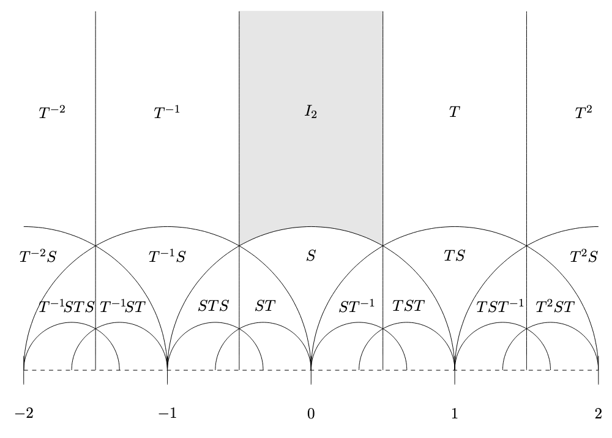

Analytic Number Theory Spring 2022
Table of Contents
\( \newcommand{\contra}{\Rightarrow\!\Leftarrow} \newcommand{\R}{\mathbb{R}} \newcommand{\F}{\mathbb{F}} \newcommand{\Z}{\mathbb{Z}} \newcommand{\Zeq}{\mathbb{Z}_{\geq 0}} \newcommand{\Zg}{\mathbb{Z}_{>0}} \newcommand{\Req}{\mathbb{R}_{\geq 0}} \newcommand{\Rg}{\mathbb{R}_{>0}} \newcommand{\N}{\mathbb{N}} \newcommand{\Q}{\mathbb{Q}} \newcommand{\O}{\mathcal{O}} \newcommand{\C}{\mathbb{C}} \newcommand{\A}{\mathbb{A}} \newcommand{\H}{\mathcal{H}} \renewcommand{\P}{\mathbb{P}} \renewcommand{\mod}{\text{ mod }} \DeclareMathOperator{\Spec}{Spec} \DeclareMathOperator{\Proj}{Proj} \DeclareMathOperator{\Ob}{Ob} \DeclareMathOperator{\Mor}{Mor} \DeclareMathOperator{\Hom}{Hom} \)
1. Dirichlet Characters
We have shown: if \(\chi \text{ mod } q\) is primitive, then \[ \sum_{a=1}^q \chi(a)e^{\frac{2\pi i a \ell}{q}} = \overline{\chi(\ell)}\sum_{a=1}^q \chi(a)e^{\frac{2\pi i a}{q}} \] since we if the character is primitive then we can just send \(\ell \mapsto \ell^{-1}\), which only works if \(\ell \neq 0 \text{ mod } q\). But if \(\ell = 0 \text{ mod } q\) and \(\chi\) is primitive, then both sides vanish, so everything is ok.
Lemma: If \(\chi\) is primitive, then \[ G(\chi) = \sum_{a= 1}^q \chi(a) e^{\frac{2\pi i a}{q}} \] satisfies that \(|\ G(\chi)| = q^{1/2}\).
Proof: Consider \[ \sum_{\ell = 1}^q \left(\sum_{a=1}^q \chi(a) e^{\frac{2\pi i a \ell}{q}} \cdot \sum_{b=1}^q e^{-\frac{2\pi i b \ell}{q}}\right) \] We evaluate in two different ways. The first way is reducing the sum to \[ \sum_{\ell = 1}^q (\overline{\chi(\ell)} G(\chi)) (\chi(\ell) \overline{G(\chi)}) = \varphi(q) \vert \ G(\chi) | \ ^2 \] and the second is \[ \sum_{a = 1}^q\chi(a) \sum_{b=1}^q\overline{\chi(b)}\sum_{\ell=1}^q e^{\frac{2\pi i (a - b) \ell}{q}} = \sum_{a,b, a = b \text{ mod } q} \vert \ \chi(a) \vert \ ^2 \varphi(q) = q \varphi(q) \] So we get what we want.
1.1. Functional Equation and Analytic Continuations of \(L(s, \chi)\)
Recall that \(L(s, \chi) = \sum_{n=1}^\infty \frac{\chi(n)}{n^s}\). We need to handle the case when \(\chi\) is even and odd seperately.
Let us define \(\theta_\chi(y) = \sum_{n \in \Z} \chi(n) e^{-\pi n^2 y}\), and compute
\begin{align*} \int_0^\infty \theta_\chi (y) y^{\frac{s}{2}} \frac{dy}{y} &= 2 \int_0^\infty \sum_{n=1}^\infty \chi(n)e^{-\pi n^2 y}y^{\frac{s}{2}}\frac{dy}{y} \\ &= 2 \pi^{-\frac{s}{2}}\sum_{n=1}^\infty\frac{\chi(n)}{n^s}\int_0^\infty e^{-y}y^{\frac{s}{2}}\frac{ds}{y} \\ &= 2\pi^{-\frac{s}{2}}\Gamma \left(\frac{s}{2}\right)L(s, \chi) \end{align*}Now note that
\begin{align*} \theta_\chi (y)) &= \sum_{a=1}^q \chi(a) \sum_{\ell }e^{-\pi (a + \ell q)^2 y} \end{align*}and when we take the Fourier transform, we see that \[ \widehat{F}(\ell) = \int_{-\infty}^\infty e^{-\pi(a + u q)^2 y}e^{-2 \pi i u \ell}du = \frac{e^{\frac{2\pi i a \ell}{q}}}{qy^{1/2}} e^{- \pi \left(\frac{\ell}{q y^{1/2}}\right)^2} \]
We can now get a functional equation for \(\theta_\chi\). In particular, we have that
\begin{align*} \theta_\chi(y) &= \sum_{a=1}^q \chi(a) \sum_{\ell = -\infty}^\infty e^{-\pi(a + \ell q)^2 q} = \sum_{a = 1}^q\chi(a) \sum_{\ell} F(a) \\ &= \frac{1}{q y^{1/2}} \sum_{a=1}^q \chi(a) \sum_{\ell} e^{\frac{2 \pi i a \ell}{q}}e^{-\pi \frac{\ell ^2}{q^2 y}} \\ &= \frac{1}{q y^{1/2}} \sum_{\ell} \sum_{a=1}^q \chi(a) e^{\frac{2 \pi i a \ell}{q}}e^{-\pi \frac{\ell ^2}{q^2 y}} \\ &= \frac{G(\chi)}{q y^{1/2}} \sum_{\ell} \overline{\chi(\ell)} e^{-\pi \frac{\ell ^2}{q^2 y}} \\ \end{align*}so we can see that \[ \theta_\chi (y) = \frac{G(\chi)}{q y^{1/2}} \theta_{\overline{\chi}}\left(\frac{1}{q^2y}\right) \]
After we take a Mellin transform and do Riemann’s trick, splitting the domain of integration on \(1/q\), we see that if \(\Lambda(s, \chi) = \pi^{-\frac{s}{2}}\Gamma(\frac{s}{2})L(s, \chi)\)qs/2, \(\Lambda\) is entire! Furthermore, we have that \[ \Lambda(s, \chi) = \frac{q^{1/2}}{G(\overline{\chi})} \Lambda(1 - s, \overline{\chi}) \]
To handle the odd case, we need to do a little bit more work. We have to chance the test function \(e^{\pi u^2 y}\) to an odd Schwarz function, and we will win. In particular, \(ue^{-\pi u^2 y}\) is a good idea. Doing everything as above, we have that in this case, \[ \Lambda(s, \chi) = \pi^{-s/2} \Gamma \left(\frac{s+1}{2}\right)L(s, \chi)q^{s/2} = \frac{-i q^{1/2}}{G(\chi)}\Lambda(1-s, \overline{\chi}) \]
2. The Infinitude of Primes in Arithmetic Progression
Fix \(\chi\) a character mod \(q\). Then, \[ \frac{L'}{L}(s, \chi) = \sum_{n=1}^\infty -\frac{\Lambda(n)}{n^s}\chi(n) \] and the orthogonality relations yield that \[ \frac{1}{\varphi(q)}\sum_{\chi \mod q}\frac{-L'}{L}(s, \chi)\overline{\chi(a)} = \sum_{n = a \mod q} \frac{\Lambda(n)}{n^s} \] As long as we can prove that \[ \lim_{s \rightarrow 1} \frac{1}{\varphi(q)}\sum_{\chi \mod q} -\frac{L'}{L}(s, \chi) = \infty \] Certainly this is true for the trivial character, which is the zeta function multiplied by a constant. So all we need to show is that \(L(1, \chi) \neq 0\) for any character \(\chi \) mod \(q\). But this is actually hard, so we’re going to prove it a different way.
Pick \(\epsilon > 0\) fixed, and the interval \([1 - \epsilon, 1]\). If there is a real character \(\chi\) mod \(d\) which vanishes at \(B \in [ 1- \epsilon, 1]\), i.e. \(L(\beta, \chi\) = 0, then we call \(\beta\) a Siegel zero. Either there are no Siegel zeros, which implies that \(L(1, \chi) > 0\) for all \(\chi\). Otherwise, there must be a Siegel zero, with some associated character \(\chi'\).
Now, we consider a simple lemma: consider \[ \xi(s) = \zeta(s)L(s, \chi)L(s, \chi')L(s, \chi \cdot \chi') = \sum_{n=1}^\infty\frac{a(n)}{m^s} \] Then, \(a(1) = 1\) and \(a(n) \geq 0\) for all \(n \geq 2\). By the Euler product, \[ \xi(s) = \prod_{p} \left(1 - \frac{1}{p^{s}}\right)^{-1} \left(1 - \frac{\chi(p)}{p^{s}}\right)^{-1} \left(1 - \frac{\chi'}{p^{s}}\right)^{-1} \left(1 - \frac{\chi' \cdot \chi}{p^{s}}\right)^{-1} \] And since these are real valued characters, you can just try all of the combinations to see that the lemma holds. But then, it must be true that \(\xi(\beta) =0 \), since \(L(\beta, \chi') = 0\). Then, we have that \[ 1 \ll \frac{1}{2\pi i}\int_{2 - i \infty}^{2 + i \infty} \xi(s + \beta) d^{10s}\frac{ds}{s(s+1)(s+2)(s+3)(s+4)} \] and shifting the line of integration we see that this becomes \[ \frac{L(1, \chi)L(1, \chi')L(1, \chi \cdot \chi')d^{10(1 - \beta)}}{(1 - \beta)(2 - \beta)(3 - \beta)(4 - \beta)(5 - \beta)} + \frac{1}{2\pi i}\int_{-\beta - i \infty}^{\beta + i \infty} \frac{\xi(s + \beta) d^{10s}ds}{s(s+1)(s+2)(s+3)(s+4)} \] and in particular this means that if \(\chi'\) is a character mod \(q'\), \[ 1 \ll \frac{L(1, \chi)\log(q')\log(dq')\vert \ d \vert \ ^{10\epsilon}}{\epsilon} + O(\vert \ d \vert \ ^{-5}) \] and so \[ L(1, \chi) \gg_\epsilon \vert \ d \vert \ ^{-\epsilon} \]
3. Modular Forms
Def: Let \(G\) act on \(X\). An automorphic function \(f: X \rightarrow \C\) satisfies that \(f(g x) = f(x)\) for all \(g \in G, x \in X\).
In particular, we want to consider the action of \(SL(2, \Z)\) on the upper half plane \(\H = \{z \mid \Im(z) > 0 \ \}\), defined by \[ \begin{bmatrix}a & b \\ c & d\end{bmatrix} g = \frac{az + b}{cz + d} \] Note that this is well-defined, since we can compute that \[ \Im \left(\frac{az + b}{cz + d}\right) = \frac{y}{| \ c z + d| \ ^2} > 0 \]
Def: We say that \(G\) acts discretely on \(X\) if for every pair of compact sets \(A, B\), there are only finitely many \(g \in G\) such that \((g A) \cap B \neq \emptyset\).
That \(SL(2, \Z)\) acts discretely on \(\H\) follows immedaitely from the previous lemma.
Def: A modular form of weight \(k\) is a holomorphic function \(f: \H \rightarrow \C\); which satisfies for any \(M \in SL(2, \Z)\), \[ f \left(\begin{bmatrix}a & b \\ c & d\end{bmatrix} z\right) = (cz + d)^kf(z) \]
We also want to consider \(PSL(2, \Z)\), which is \(SL(2, \Z) / \pm 1\), which also acts on \(\H\).
Def: Let \(G\) act on \(X\). We say that \(x, x' \in X\) are congruent mod \(G\) if there is some \(g \in G\) such that \(x' = gx\).
Def: Let \(G\) act on \(X\). Then a fundamental domain \(D \subset X\) satisfies the following conditions:
- For every \(x \in X\) there exists \(g \in G\) such that \(gx \in D\)
- Every \(x \neq x'\) with \(x, x' \in D\) are inequivalent mod \(G\).
Let \(D\) be a connected fundamental domain for \(PSL(2, \Z)\) acting on \(\H\). Then we can choose it to be the following shaded region:

Now consider the most general case of automorphic forms: \[ f(gx) = j(g,x) \cdot f(x), \ \forall g\in G, x \in X \] It must be true that \(j(e, x) = 1\), and \(j(g, g'x) = j(g, g'x) \cdot j(g', x)\) (whenever \(f\) is not identically zero). The latter condition is called the cocycle condition. It is easy to check that \(j(g, z) = cz + d\) and its powers satisfies both conditions.
3.1. Eisenstein Series
Consider \[ E_k(z) = \sum_{\substack{c,d \in \Z \\ (c,d) = 1}} \frac{1}{(cz + d)^k} \] which converges for \(k > 2\), and is nontrivial for \(k \neq 0 \mod 2\). This should be a modular form of weight \(k\). Let \(\Gamma_\infty = \left\{ \begin{bmatrix} 1 & m \\ 0 & 1 \end{bmatrix} \mid m \in \Z \right\}\). Then, I claim that \[ E_k(z) = \sum_{\gamma \in \Gamma_\infty \backslash SL(2, \Z)}j(\gamma, z)^{-k} \] which is not hard to see; then it becomes also clear that \(E_k\) is an automorphic form via the cocycle condition.
3.2. Ramanujan Tau
If we let \[ G_k(z) = 2 \zeta(k) + 2 \frac{(2\pi i)^k}{(k-1)!} \sum_{n=1}^\infty \sigma_{k-1}(n)e^{2\pi i nz} = 2 \zeta(k)E_k(z) \] where \(\sigma_k(n) = \sum_{d \mid n}d^k\).
We call \[ \Delta(z) = \frac{2^6}{3^3}(E_4^3(z) - E_6^2(z)) = \sum_{n=1}^\infty \tau(n)e^{2\pi i nz} \] the Ramanujan \(\Delta\).
Now, he made some conjectures about the \(\tau\) function:
- \(\tau(mn) = \tau(m) \tau(n)\), if \((m, n) = 1\)
- \(\tau(p^{k+1}) = \tau(p) \tau(p^k) - p^{11}\tau(p^{k-1})\)
- \(| \ \tau(p) | \ \leq 2p^{11/2}\)
Now, assuming the above, then \(\sum_{n=1}^\infty \frac{\tau(n)}{n^s}\) converges for \(\Re(s) > \frac{13}{2}\), and this has a Euler product \[ \prod_{p} (1 - \tau(p)p^{-s} + p^{11-2s})^{-1} = \prod_{p} \left(1 - \frac{\alpha(p)}{p}\right)^{-1}\left(1 - \frac{\beta(p)}{p}\right)^{-1} \] where \(\tau(p) = \alpha(p) + \beta(p)\) and \(\alpha(p)\beta(p) = p^{11}\). The above conjectures are all true (but (3) is really hard, involving the Weil conjectures).
4. \(L\)-functions and Modular Forms
Let \(f(z)\) be a modular form of weight \(k\) for \(SL(2, \Z)\). Then it is periodic, and has a Fourier expansion \(f(z) = \sum_{n=0}^\infty a_ne^{2\pi i n z}\). Then we may define the \(L\)-function associated to \(f\) as \[ L(s, f) = \sum_{n=1}^\infty \frac{a_n}{n^s} \] Now, Deligne proved with the Weil conjectures that \(| \ a_p | \ < 2p^{\frac{k-1}{2}}\), but it is a much easier result that \(| \ a_p | \ \ll p^{k/2}\), which is good enough for convergence.
Thm: \(L(s, f)\) has a meromorphic continuation to all \(s \in \C\), and for cusp forms \(L(s, f)\) is entire.
To see this, consider \[ f(iy) = \sum_{n = 0}^\infty a_ne^{2\pi n y} \] and choose \(\begin{bmatrix}0 & -1 \\ 1 & 0\end{bmatrix} \in SL(2, \Z)\) such that \[ f(iy^{-1}) = (iy)^kf(iy) \implies f(iy^{-1}) = i^k y^k f(iy) \]
Then, we just follow Riemann, and consider the Mellin transform \[ \int_0^\infty (f(iy) - a_0)y^{s+\frac{k}{2}-1}dy = \sum_{n=1}^\infty a_n \int_0^\infty e^{2\pi n y}y^{s + \frac{k}{2} - 1}dy = (2\pi)^{-s}\Gamma(s)L(s, f) = \Lambda(s,f) \] Then you split the integral as usual can do some more work and arrive at \[ \Lambda(s,f) = i^k \Lambda(k-s, f) \] which has poles with residue \(a_0\) at \(s = \pm \frac{k}{2}\).